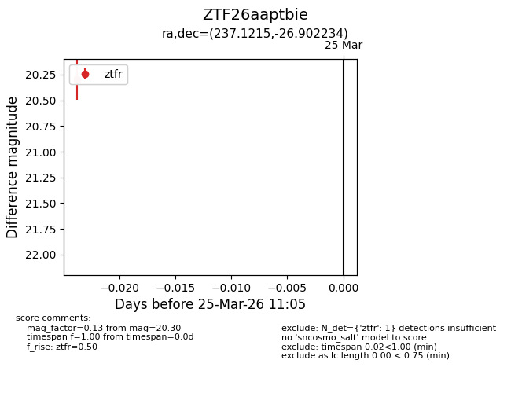
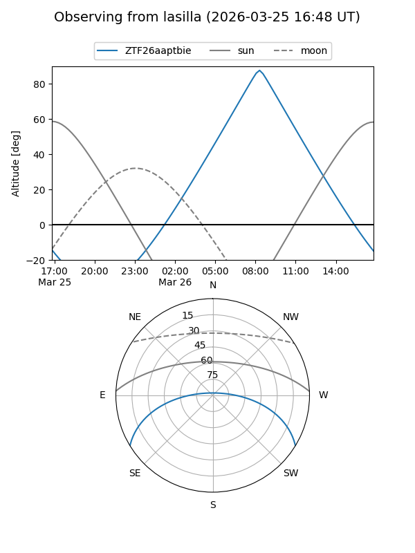
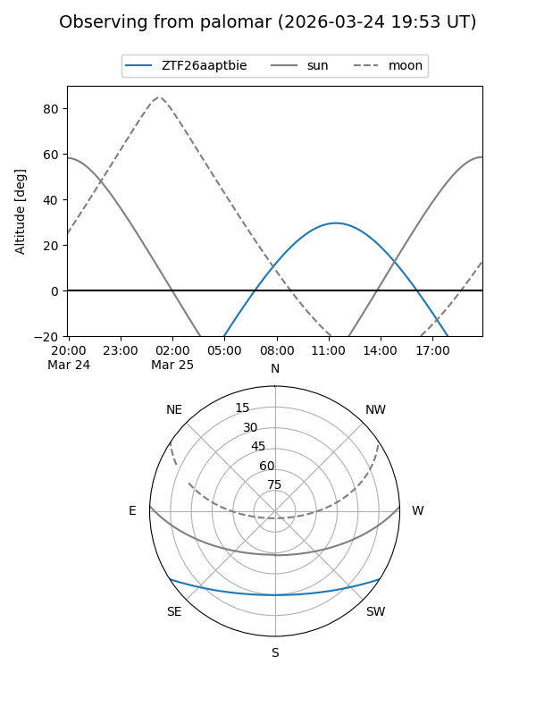

ZTF26aaptbie
Target ZTF26aaptbie at 2026-03-25 11:08
Aliases and brokers:
FINK: link
Lasair: link
ALeRCE: link
alt names
ZTF26aaptbie (ztf,fink_ztf)
Coordinates:
equatorial (ra, dec) = 237.1215,-26.90223
equatorial (HMS+DMS) = 15:48:29.16,-26:54:08.04
galactic (l, b) = (344.8229,+21.22767)
Flags:
Photometry:
last ztfr=20.30
1 ztfr detections
Lightcurve

Visibility


Additional plots